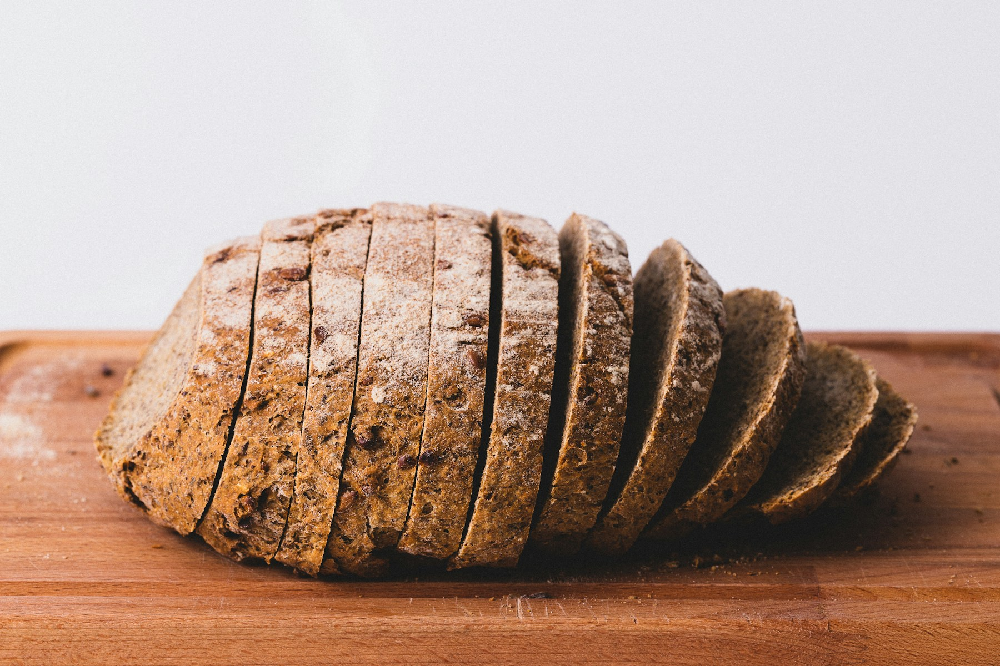

バタークロワッサン
¥320税込 / 1個
さくっと軽い食感と、バターの豊かな香り。
商品について
薄く重ねた生地を香ばしく焼き上げるクロワッサン。コーヒーと一緒に楽しむ朝食に。
アレルゲンの表示例 小麦・乳・卵
小麦の香りで始まる一日。
掲載例
朝のひと口にも、食卓の真ん中にも。
今日の気分に合うパンを見つけてください。
4種類のパンを表示しています
¥320税込 / 1個
さくっと軽い食感と、バターの豊かな香り。
薄く重ねた生地を香ばしく焼き上げるクロワッサン。コーヒーと一緒に楽しむ朝食に。
アレルゲンの表示例 小麦・乳・卵
¥680税込 / 1個
香ばしい皮と、もっちりした中身を楽しむパン。
料理と合わせやすい素朴な味わい。厚めに切ってトーストすると、皮の香ばしさが引き立ちます。
アレルゲンの表示例 小麦

¥540税込 / ハーフ
穀物の風味を楽しむ、毎日の食事パン。
薄くスライスしてチーズやスープと一緒に。サンドイッチにも合わせやすいパンです。
アレルゲンの表示例 小麦
¥720税込 / 1個
種の食感と香ばしさを、ひと口ごとに。
ひまわりの種などをまとわせた食事パン。そのままでも、軽く温めても楽しめます。
アレルゲンの表示例 小麦・ごま
商品名・価格・原材料の説明はサンプルです。写真はイメージです。
お気に入りのパンがひとつあるだけで、
朝ごはんが少し楽しみになる。
こむぎ日和が思い描くのは、
そんな日々に寄り添う小さなパン屋です。
トーストにしたり、スープに添えたり。
それぞれの食卓で楽しんでいただけるパンを。
こむぎ日和は、お持ち帰りのパン専門店をイメージした架空のお店です。
| 営業時間 | 月 | 火 | 水 | 木 | 金 | 土 | 日 |
|---|---|---|---|---|---|---|---|
| 9:00〜18:00 | 営業 | 休み | 休み | 営業 | 営業 | 営業 | 営業 |
パンがなくなり次第終了
販売スタッフの仕事内容や勤務時間をご案内します。
パンや採用についてのお問い合わせ欄です。
サンプルフォームです。入力した内容は送信されません。